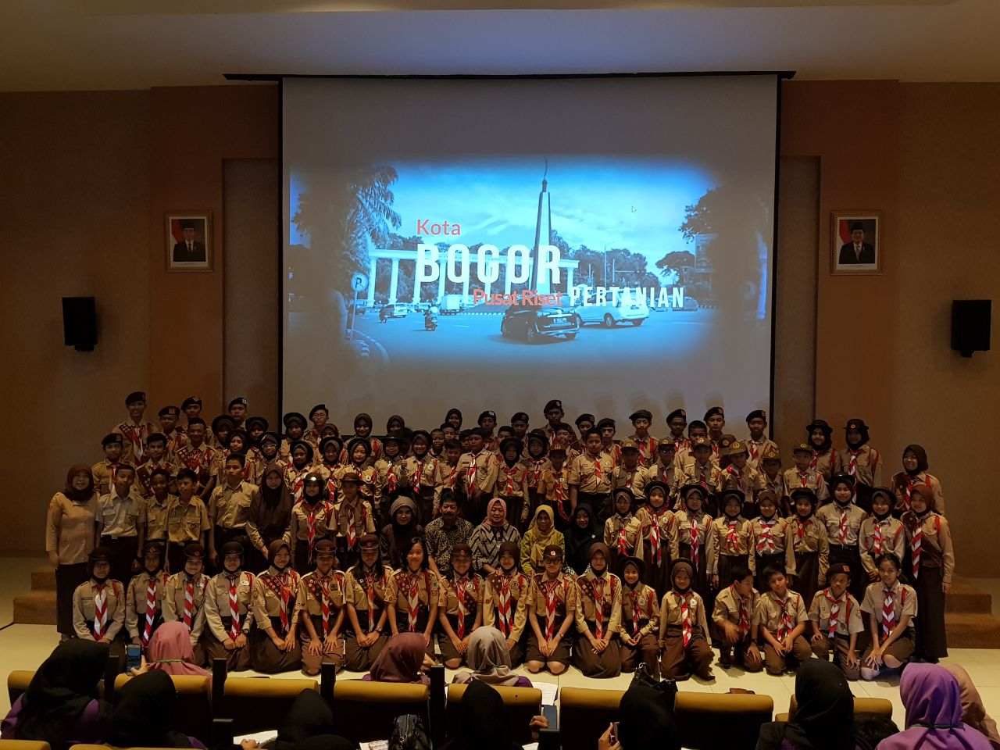
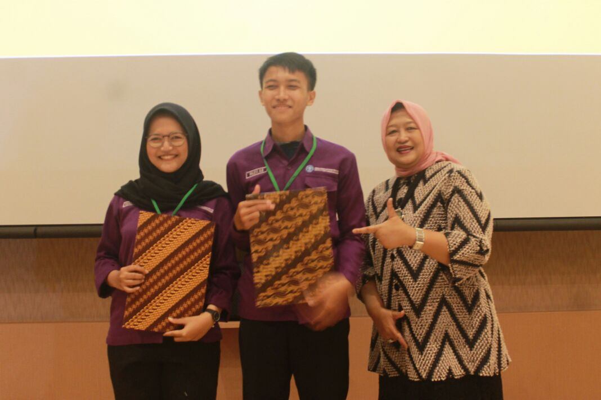

BOGOR-RADAR BOGOR, Generasi Milenial dari Program Diploma IPB unjuk gigi dalam karya nyata yang mengangkat tema pertanian Indonesia. Bekerjasama dengan Kementerian Pertanian yang dimotori oleh Balai Besar Pengkajian dan Pengembangan Teknologi Pertanian (BBP2TP)-Balitbangtan, para mahasiswa dari jurusan Manajemen Informatika ini membuat tayangan animasi dengan beragam topik.
Beberapa topik yang sangat akrab dengan program strategis Kementan turut dibahas dan di kaji. Antara lain meliputi, potensi lahan sub optimal (lahan kering dan lahan rawa), beternak ayam KUB untuk program. Bekerja, merebut kejayaan bawang putih dan rempah Indonesia, kejayaan rempah Indonesia, pertanian perkotaan mendukung KRPL, profesi di bidang pertanian serta pengelolaan air dan sumberdaya lahan pertanian.
Dalam prosesnya yang terbilang cukup singkat ini, para mahasiswa memperoleh saran dan masukan terkait substansi dari para peneliti dan penyuluh BBP2TP. Meski tak pernah bertatap muka dalam diskusi, proses bimbingan dan komunikasi berjalan sangat efektif melalui group media sosial WhatsApp. “Anak informatika ternyata jago juga bicara pertanian,” tukas Nurul, salah satu alumni Program Diploma IPB.
Tak mengherankan, karena mereka adalah Generasi Y yang sangat akrab dan bahkan tak bisa lepas dari beragam gadget dan koneksi internet. Maka, proses finalisasi animasi hanya berlangsung selama dua minggu. Para mahasiswa ini sangat cepat merespon feedbacks untuk menyempurnakan tayangan animasinya.
Dalam acara puncak Tahrib Ramadhan yang digelar Badan Litbang Pertanian di Cimanggu-Bogor belum lama ini (Selasa, 7 Mei 2018). Sejumlah 200 mahasiswa bersama pelajar siswa-siswi sekolah dasar dan menengah berseragam Pramuka menikmati tayangan animasi di Agrosinema, sebuah sinema berkelas premium milik Balitbangtan.
Hadir pula Ketua Dharma Wanita Persatuan Balitbangtan, Ibu Kepala Badan, Luluk Syakir yang memberi apresiasi dan juga menyemangati mereka untuk terus berkarya. “Sebagai generasi penerus, harus menunjukkan kemampuan untuk bisa eksis di bidang keahlian kalian, teruslah berkarya,” ujar Luluk Syakir saat memotivasi para peserta.
Pada kesempatan tersebut Luluk juga memberikan piagam penghargaan pada perwakilan 103 Mahasiswa Informatika atas kontribusi mereka dalam menghasilkan karya animasi dengan topik pertanian.
Terpisah, Kepala BBP2TP, Dr. Haris Syahbuddin, DEA juga mengemukakan kesan atas kerjasama yang terjalin antara BBP2TP dan IPB. “Kerjasama ini sangat bermanfaat, simbiosisnya mutualisme,” ungkapnya saat di hubungi.
Menurutnya, dari kerjasama ini, mahasiswa mendapatkan pembelajaran lapangan yg real terkait dengan liku-liku penyebaran teknologi, adopsi teknologi hingga feedback terhadap teknologi tersebut, hingga terciptalah aliran inovasi-reinovasi. Mahasiswa juga dapat mempelajari orientasi dan program strategis Kementan dan Balitbangtan saat ini, baik jangka menengah dan ke depannya.
Menyikapi mentoring oleh para peneliti dan penyuluh BBP2TP, Dr. Haris Syahbuddin menyatakan bahwa melalui pembelajaran ini, para peneliti, pengkaji dan penyuluh Balitbangtan mendapat kesempatan menggali, mempelajari dan menggunakan keunggulan IT dalam mendukung kegiatan diseminasi. “Kegiatan penyebaran informasi teknologi dapat dilakukan dengan teknik penyampaian pesan secara singkat melalui jaringan on line, infografis, dan lain-lain,” tegas Harris.
Tayangan animasi ini berencana akan disebarkan ke sekolah-sekolah dalam rangka pengenalan inovasi pertanian kepada para pelajar.
Sementara itu, Direktur Program Diploma IPB, Dr. Bagus P. Purwanto, MAgr mengungkapkan harapan melalui pesan WhatsApp, agar kerjasama ini dapat menjadi jembatan yang akan mempermudah dalam diseminasi teknologi atau hasil penelitian Balitangtan untuk diterapkan di masyarakat. Menurutnya, kegiatan ini merupakan bentuk pendidikan vokasi dual system dimana user dan dunia pendidikan tinggi bersinergi dalam kegiatan akademik.
Lebih lanjut, Dr. Bagus P. Purwanto menyatakan bahwa inisiasi kerjsama ini seolah menjadi jawaban atas misi Program Diploma IPB yang akan bertransformasi menjadi Sekolah Vokasi IPB (Sekolah VIP Bogor) dengan pendidikan D3 sistem 3 – 2 – 1. Artinya, 3 semester di kampus, 2 semester di industri atau user ,dan 1 semester pilihan. Dengan program 321 ini diharapkan kebutuhan kompetensi yang diharapkan user akan sesuai dengan pendidikan D3 IPB.